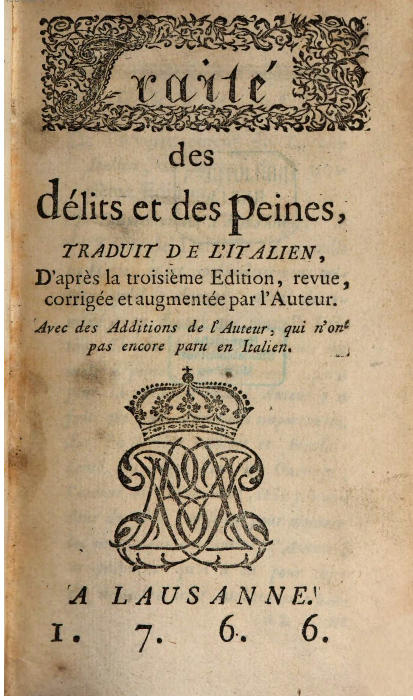

#### Lost in Beccaria, or: Building and Exploring a Corpus of 18th-Century Editions and Translations of Beccaria’s _Dei delitti e delle pene_ (1764) in the MetaLex project <hr/> <br/> <p>Christof Schöch (Trier), with Claudine Moulin (Trier), Falk Bretschneider (Paris), Rainer Maria Kiesow (Paris)</p> <br/> <p><strong>Slides: <a href="https://dh-trier.github.io/beccaria/#/">dh-trier.github.io/beccaria/</a></strong></p> <p><strong><emph>Digital Methods and Resources in Legal History | March 5, 2021</strong></p> <hr/> <img height="65" data-src="img/basics/uni-trier.png"> <img height="70" data-src="img/basics/tcdh-slim.png"> :: - Welcome to this talk. It's nice to be here! - My name is CS - I'll be talking about (read title) - Collaborative work, with CM, FB, RMK and others - Little caveat: I'm not a legal scholar, please keep this in mind - I'll focus more on the DH side of the project -- ## Overview <br/> 1. [Cesare Beccaria, _Dei delitti e delle pene_ (1764)](#/2) 1. [Metalex - Les mots du droit](#/3) 1. [Modeling the multilingual _Delitti_](#/4) 1. [Conclusion](#/5) :: - Three things I'd like to talk about - A bit about the treatise "Dei delitti e delle pene", its editions and translations in the 18th century - Then a short interlude about our project - Then a bit more on what we're trying to do with this multilingual tradition of texts -- ## (1) Cesare Beccaria,<br/> _Dei delitti e delle pene_ (1764) <br/> :: - Beccaria: - enlightenment philosopher; active in the second half of the 18-C - key author for the foundation of modern criminal law; - We're particularly interested in the editions and translations of his main work - What follows are just a few examples of these editions - The title pages (and prefaces) give a lot of interesting information --- ### _Dei delitti e delle pene_ (ita, 1764) <br/><p>Italian edition, first published in 1764 (Livorno)</p> :: - As we can see, the work was published anonymously - One more edition in 1764 - And a revised edition already in 1765 - Alltogether, it looks like there were 9 italian Editions until 1800 alone. --- ### _Des délits et des peines_ (fra, 1766)  <br/><p>French translation by Morrelet, 1766.</p> :: - Several remarkable things here - First, the French translation is by Morrelet, important philosopher in his own right - The translation is based on the third, revised, Italian edition (1765) - It includes additions by Morrelet - Not visible here: Many of these additions were included in subsequent italian editions (1774, and more)! --- ### _Des délits et des peines_ (deu, 1766) <img height="500" data-src="img/delitti_deu-1766c.jpg"> <br/><p>German translation, 1766.</p> :: - Again, some interesting things to note. - The German edition is translated from the French - Again, with additional changes --- ### Editions and translations (overview) <a href="img/delitti-europe.svg"></a> <br/><p>(Data: Floriane Chiffoleau, visualization: CS)</p> :: - Here, the overview of all editions or translations in the four languages we focus on - We have been able to identify 29 editions or translations in total, up to 1800. - Of note are those E/T that spark new lines of translations - This investigation could of course be extended - into more languages: Swedish, Spanish, Polish, for example. - into the 19th century. - But for the moment, we focus on the 18th century. - So, what do we do with this tradition in our project? -- ## (2) Metalex - Les mots du droit --- ### Project profile * Franco-german research project (Trier and Paris) <!-- .element: class="fragment" data-fragment-index="1" --> * Cooperation between <!-- .element: class="fragment" data-fragment-index="2" --> * EHESS Paris (Falk Bretschneider, Rainer Maria Kiesow) * TCDH Trier (Claudine Mouline, Christof Schöch) * Exploratory project supported by <!-- .element: class="fragment" data-fragment-index="3" --> * Fondation Maison des Sciences de l'homme * Villa Vigoni - Centro italo-tedesco per il dialogo europeo * Focus on historical, multilingual, digital lexicography in the area of legal discourse <!-- .element: class="fragment" data-fragment-index="4" --> * First pilot / use case for a broader study: _Dei delitti e delle pene_ <!-- .element: class="fragment" data-fragment-index="5" --> --- ### Work so far * Research and interdisciplinary exchange at the same time <!-- .element: class="fragment" data-fragment-index="1" --> * Several work meetings * Workshop for ECI in Paris * Investigation into the history of editions and translations (Chiffoleau, see above) <!-- .element: class="fragment" data-fragment-index="2" --> * Digitisation: Identification, scanning, OCR of the editions and translations <!-- .element: class="fragment" data-fragment-index="3" --> * Developed and tested a data model and research scenarios for this material <!-- .element: class="fragment" data-fragment-index="4" --> :: - What have we done so far? -- ## (3) Modeling the multilingual _Delitti_ --- ### Key issues * Development of European law-related vocabulary * How are key legal concepts expressed in the editions and translations? * How can we make the historical practice accessible? --- ### The idea of the "meta-lexemes" * {LAW} * [LAW] * Gesetz (Gesetz, Gesetze, Gesetzes...) * loi (loi, lois, loix) * law (law, laws) * legge (...) * [LEGISLATION] * legislatore (legislatione, legislative, ...) * Gesetzgeber (Gesetzgeber, Gesetzgebung, ...) * législateur (législation, ...) * legislator (...) * [LEGALITY] * legale (...) * gesetzlich (gesetzlich, rechtmäßig) * légal (légalité) * legal (legally) :: - This is where the idea of the "meta-lexemes" comes in - We think of this as a bottom-up, inductive process - What legal terms do we find, how can they be usefully clustered? - We go from the word forms (in brackets) - Merge them to a language-based lemma - Merge the lemmas to a cross-language lemma - Merge several related cross-language lemmas into a "meta-lexeme" --- ### Further examples of meta-lexemes * CRIME * INNOCENCE * PASSION * PUNISHMENT * PREVENTION * PROHIBITION * PROTECTION * SEDUCTION * SEXUALITY * VICE * ... :: - These are just a few more examples - The process of building and consolidating this list is ongoing - But: there is no predefined ontology assumed, all bottom-up --- ### Encoding 1. Metadata (language, year) <!-- .element: class="fragment" data-fragment-index="1" --> 1. Alignment of sentences across languages<br/>(challenges: insertions, reorganizations, free translation) <!-- .element: class="fragment" data-fragment-index="2" --> 1. Linguistic annotation with lemma and POS<br/>(challenges: orthographic variation) <!-- .element: class="fragment" data-fragment-index="3" --> 1. Identification and annotation of lexemes corresponding to "meta-lexemes" (semi-automatic) <!-- .element: class="fragment" data-fragment-index="4" --> 1. Everything is encoded in XML (compatible with TEI and TXM) <!-- .element: class="fragment" data-fragment-index="5" --> :: - We follow these basic three steps - Everything is encoded in XML-TEI for ingest e.g. in TXM --- ### An example of an XML document :: - This is a small sample from one such XML files, here French text - Note that each sentence (or more precisely: segment) has an id - This is to match up sentences across editions / translations - Then, for each word form, we have: the wordform, the POS, the lemma, - And, if applicable, the "meta-lexeme" marked with "mlx" --- ### Sample corpus in TXM:<br/>4 languages, 8 documents --- ### TXM: Search for a lemma --- ### TXM: Concordance for lemma --- ### TXM: Concordance for meta-lexeme -- ## Conclusion --- ### Next steps * Qualitatively <!-- .element: class="fragment" data-fragment-index="1" --> * Better conceptual basis for the inventory of lexemes * Integrate metalexemes and texts into the LOD paradigm * Quantatively <!-- .element: class="fragment" data-fragment-index="2" --> * Automation, automation, automation (alignment, meta-lexemes) * Based on this: increase the scale (more, complete, texts) :: - I think it has become clear where we stand: - In the middle of a small-scale pilot project - The next steps are therefore (slides) --- ### <br/><br/> ### Thank you! | Grazie! | Danke! | Merci! --- ### References <small> * Audegean, Ph. & Delia, L. (2018) (eds.). Le Moment Beccaria: naissance du droit penal moderne (1764-1810). Liverpool: Liverpool University Press. * Bretschneider F., Kiesau, R. M., Moulin, C., Schöch, Ch. (2020). „Les mots de Beccaria. Métalexico-graphie des langues du droit à partir de Dei delitti e delle pene (1764) et ses traductions en Europe”. In: Revue Beccaria. * Burnard, L. (2014). What Is the Text Encoding Initiative? : How to Add Intelligent Markup to Digital Resources. Marseille: OpenEdition Press. http://books.openedition.org/oep/426. * Chiffoleau, F. (2019). Vers un alignement de traductions et d’édtions à partir d’un lexique et à travers un corpus multilingue. Travail sur Dei Delitti e delle Pene du marquis de Beccaria. Mémoire de Master, École Nationale des Chartes, Paris. * Heiden, Serge (2010). “The TXM Platform: Building Open-Source Textual Analysis Software Compatible with the TEI Encoding Scheme.” In Proceedings of the 24th Pacific Asia Conference on Language, Information and Computation, 389–98. http://halshs.archives-ouvertes.fr/halshs-00549764. * Ketzan, Erik und Christof Schöch: "What Changed When Andy Weir's The Martian Got Edited?" _Digital Humanities Conference 2017_, Montréal: McGill University and Université de Montréal, 2017, https://dh2017.adho.org/abstracts/317/317.pdf. </small> --- <br/> <br/> <br/> <br/> <br/> <br/> <br/> <br/> <br/> <br/> <hr/> <p><a href="https://creativecommons.org/licenses/by/4.0/">CC BY 4.0</a> | 2021<br/></p> <hr/> <br/> <br/> </script> </section>